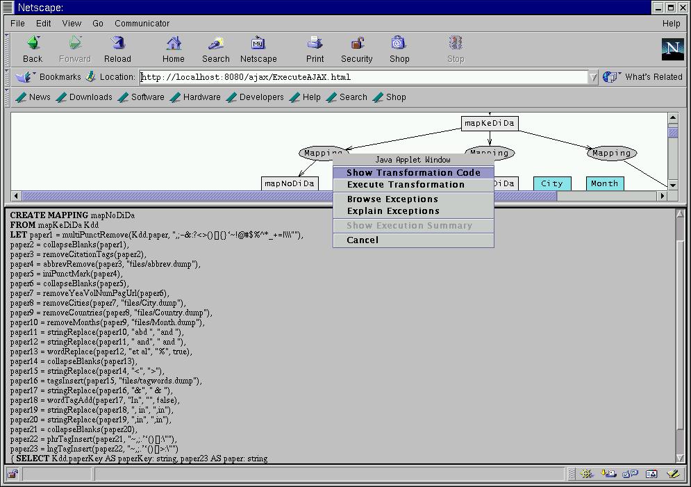

Let us now focus on the left branch of the graph and execute the mapping that prepares the dirty data for another extraction. The mapNoDiDa standardizes the initial strings by applying a set of normalization external functions.
